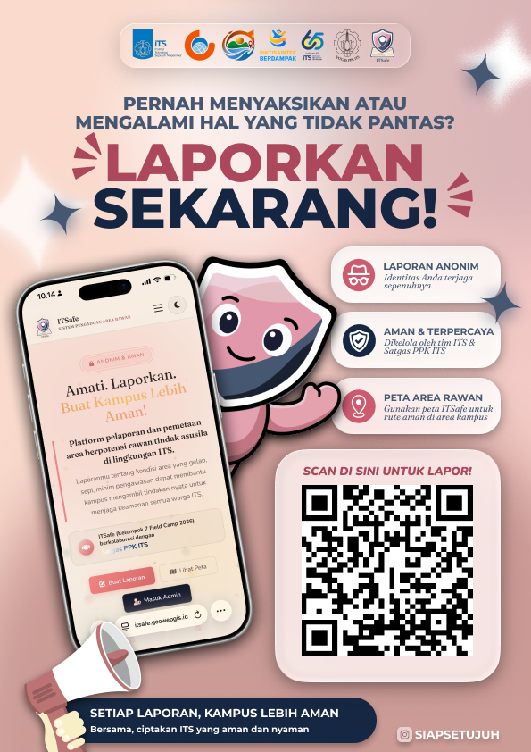

Amati. Laporkan.
Buat Kampus
Lebih Aman!
"Keamananmu adalah tanggung jawab kita bersama."
Platform pelaporan & pemetaan area rawan asusila di ITS yang anonim, cepat, dan berdampak nyata.
Tren Banyak Laporan Area Rawan Masuk
Grafik laporan area rawan yang masuk berdasarkan bulan atau tanggal. Filter laporan berdasarkan waktu, bulan, dan tahun di bawah ini.
Form Pengaduan Area Rawan
Kamu mengamati area kampus yang terasa tidak aman atau nyaman? Ceritakan kondisinya di sini. Semua data bersifat rahasia dan identitas pelapor dilindungi sepenuhnya.
Detail laporan hanya dapat diakses oleh administrator peneliti ITSafe. Publik hanya melihat statistik agregat dan sebaran peta tanpa informasi personal.
Peta Persebaran Area Rawan
Visualisasi interaktif persebaran laporan kondisi area berpotensi rawan tindak asusila. Pilih jenis peta sesuai kebutuhan analisis.
- 1 Area 1 0
- 2 Area 2 0
- 3 Area 3 0
- 4 Area 4 0
- 5 Area 5 0
Panduan Mengirim Laporan ITSafe
Ikuti alur singkat ini agar laporanmu lebih jelas, aman, dan mudah diverifikasi oleh admin sebelum masuk ke peta.
Lihat contoh pengisian dari awal sampai laporan terkirim
Video ini membantu kamu memahami urutan pengisian, mulai dari memilih lokasi, menjelaskan kondisi area, sampai mengirim laporan dengan aman.
Isi Identitas Aman
Gunakan email ITS dan kontak aktif. Data ini membantu admin menghubungi jika ada klarifikasi, tetapi tidak dipublikasikan di peta.
Pilih Lokasi Tepat
Pilih titik pada peta atau gunakan lokasi terdekat. Tambahkan patokan seperti gedung, lantai, sisi koridor, atau area parkir.
Nilai Kondisi Area
Jawab pencahayaan, kepadatan, CCTV, petugas, dan penilaian subjektif sesuai kondisi yang kamu rasakan di lokasi tersebut.
Kirim & Pantau
Periksa lagi isian penting sebelum kirim. Setelah terkirim, laporan akan menunggu verifikasi admin sebelum tampil pada peta publik.
Tulis patokan yang mudah dicari, misalnya "dekat tangga sisi barat", "belakang gedung", atau "parkiran motor dekat pohon besar".
Pilih jam atau kondisi waktu yang paling menggambarkan kejadian, seperti malam hari, jam pulang kegiatan, atau saat area sepi.
Lampirkan foto kondisi fisik bila memungkinkan. Hindari menampilkan wajah orang lain, identitas pribadi, atau hal sensitif.
Jelaskan apakah kamu menghindari area tersebut, merasa tidak nyaman saat sendiri, atau pernah melihat situasi mencurigakan.
Jawaban tentang lampu, CCTV, petugas, dan kepadatan akan membantu membedakan heatmap kerawanan dari kelayakan fasilitas.
Gunakan bahasa yang jelas dan seperlunya. Tujuan laporan adalah membantu pemetaan area rawan dan perbaikan lingkungan kampus.
Informasi pelapor dan foto sensitif tidak ditampilkan di peta publik. Admin hanya menggunakan data untuk verifikasi dan pemetaan area rawan.
Temukan ITSafe di Kampus!
ITSafe tersebar di area-area strategis kampus ITS. Temukan poster kami, scan QR, atau akses langsung lewat website dan laporkan kondisi area secara anonim & gratis kapan saja.
How to Find ITSafe?
Tidak perlu daftar dan tidak perlu login karena ITSafe dirancang agar siapapun bisa lapor dalam hitungan detik.
Temukan Poster di Kampus
Kami telah menempel poster ITSafe di titik-titik strategis kampus ITS seperti toilet, koridor, parkiran, dan area rawan lainnya. Cukup scan QR yang ada di poster!
Akses Website Langsung
Kunjungi itsafe.geowebgis.id langsung dari browser HP atau laptop kamu. Tidak perlu instal aplikasi apapun!
Sebarkan ke Teman
Satu laporan bermakna besar. Semakin banyak warga ITS melapor, semakin akurat peta kerawanan kampus kita.
Kenali Poster ITSafe di Kampus
Poster berwarna merah muda & putih ini adalah tanda bahwa area tersebut dalam pantauan komunitas ITSafe.
Identitas pelapor tidak pernah dipublikasikan. Lapor dengan aman.
Form singkat, langsung ke sistem tanpa perlu buat akun.
Laporan tervalidasi langsung tampil di peta interaktif ITSafe.
Data diteruskan ke tim Satgas PPK ITS untuk tindakan nyata.

Lokasi Titik Pengaduan Terpasang
Titik-titik berikut adalah lokasi rawan yang telah atau akan dipasangi stiker QR pengaduan ITSafe.
Setiap Laporan, Kampus Lebih Aman
Bersama, ciptakan ITS yang aman dan nyaman untuk semua. Laporkan kondisi area yang tidak aman secara anonim, cepat, dan berdampak nyata.
Tentang ITSafe
Platform pemetaan dan pengaduan area berpotensi rawan tindak asusila berbasis spasial di lingkungan Institut Teknologi Sepuluh Nopember Surabaya. Dikembangkan oleh Kelompok 7 Field Camp 2026 yang berkolaborasi dengan Satgas PPK ITS.
What is ITSafe?
Sebuah jawaban atas kebutuhan nyata akan kampus yang lebih aman karena ini bukan sekadar aplikasi, melainkan gerakan berbasis data.
Kampus Luas, Pengawasan Terbatas
Institut Teknologi Sepuluh Nopember memiliki kawasan kampus yang sangat luas dengan dinamika aktivitas tinggi. Namun tidak semua sudut terpantau secara optimal seperti lorong gedung, area parkir tertutup, jalan pintas, taman, hingga toilet kerap menjadi titik buta dengan pencahayaan minim, lalu-lalang sepi, atau tanpa kamera pengawas.
Kondisi seperti ini menciptakan ruang bagi potensi tindak asusila yang seringkali dinormalisasi dan diabaikan. ITSafe hadir untuk memutus rantai tersebut.
ITSafe adalah platform pelaporan kondisi area berbasis crowdsourcing sekaligus pemetaan spasial yang dikembangkan untuk mengidentifikasi area berpotensi rawan tindak asusila di lingkungan Kampus ITS Sukolilo untuk mendukung kebijakan peningkatan keamanan yang lebih tepat sasaran.
- Khusus untuk warga ITS: mahasiswa, dosen, tendik, dan staf kampus
- Hanya lokasi di dalam batas wilayah Kampus ITS Sukolilo
- Rasa tidak nyaman atau terancam mengarah pada potensi tindak asusila
- Bentuk pelecehan: siulan nakal, komentar seksual, penguntitan, hingga pelecehan fisik
- Data berbasis spasial dan temporal: lokasi GPS, waktu rawan, kondisi fisik area
- Tidak dapat menindaklanjuti kasus ke ranah hukum
- Tidak melakukan investigasi terhadap pelaku
- Tidak mendampingi korban secara langsung
- Untuk kasus nyata, hubungi Satgas PPK ITS: 0811-3333-6000
Dari Laporan ke Perubahan Nyata
Pelapor mengisi form ITSafe dengan lokasi GPS, waktu rawan, kondisi fisik, dan foto opsional secara anonim
Tim admin memverifikasi kualitas data. Laporan semakin lengkap → semakin cepat tervalidasi
Data tervalidasi dianalisis menjadi peta sebaran, heatmap kerawanan, dan zonasi risiko
Hasil diteruskan ke BUK4L & Satgas PPK ITS untuk perbaikan CCTV, lampu, dan rute patroli
02 Filosofi Logo
Lebih dari sekadar simbol, ITSafe adalah pernyataan bahwa keamanan adalah hak semua orang di lingkungan kampus.
"Apa itu ITSafe?
Nama ITSafe lahir dari dua kata: ITS Institut Teknologi Sepuluh Nopember, dan Safe aman. Bersama, keduanya membentuk satu visi: menjadikan ITS sebagai kampus yang benar-benar aman untuk semua.
Mengapa logo ini dirancang begini?
Tiga nilai inti yang tertanam
ITSafe
Platform pelaporan dan pemetaan area berpotensi rawan tindak asusila di lingkungan ITS. Dikembangkan sebagai alat analisis geospasial untuk mengidentifikasi kerawanan area berdasarkan perspektif civitas kampus.
03 Kontak & Dukungan
Kami terbuka untuk kritik dan saran dari seluruh warga ITS demi terus memperbaiki platform
ITSafe.
Pilih kanal yang paling nyaman untuk menghubungi kami.